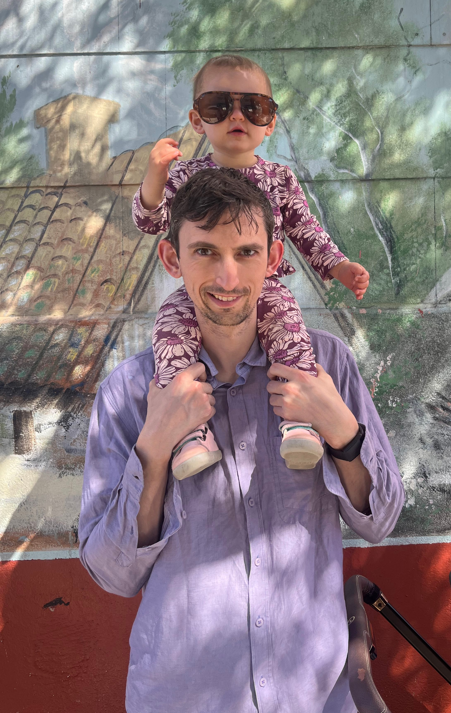

I like to do AI research and start companies. I am currently working on my second company.
I co-founded Adept, where I was responsible for the research program. We built the first Computer Use Agents and the Fuyu family of multi-modal models. We exited to Amazon in 2024. From June through November of 2025, I was a Research Scientist in TBD Labs at Meta.
Along with my Adept co-founder Max Nye, I discovered/invented the notion of scaling test time compute for Transformers. Our Scratchpad Technique (popularly known as chain of thought, for which we hold the patent) is the basis for LLM reasoning.
Prior to Adept, I was at Google Brain for ~5 years. In addition to the Scratchpad work, I did a lot of research on Program Synthesis. I led Brain's work on Program Synthesis with Large Language Models and co-created Google Sheet's SmartFill Program Synthesizer,
Before I worked on program synthesis, I worked on generative modeling of images. I have also worked on Semi-Supervised Learning and other, miscellaneous topics, such as Coverage-Guided Fuzzing of Neural Networks.
I came to Brain by being in the first batch of Google Brain Residents. Before all of that, I was a trader: I worked at Five Rings Capital and Millennium. Before I was a trader, I was a Math major at Columbia University.